Zusammenfassung Statistik 1
Tutorium zur Vorlesung “Statistik für Sozialwissenschaften I” von Prof. Dr. Simone Abendschön
VL 1 Grundlegende Begriffe
Was ist Statistik
- Deskriptiv
- Merkmale
- Zusammenhänge
- Grafische Datstellung
- Lage und Streumaße
- Inferenz
- GG/Stichprobe
- Stichprobenfehler
- amtliche Statistik
- von Institutionen in Auftrag gegeben
- Explorative Statistik
- Zusammenhänge in Daten finden
- Big Data
Grundbegriffe
- Grundgesamtheit
- Menge der Objekte für die die Aussage der Untersuchung gelten soll
- Stichprobe
- systematische Auswahl einer Teilmenge von Elementen aus der GG
- Stichprobenfehler
- Merkmalsausprägung in GG und Stichprobe unterscheidet sich
Skalenniveaus
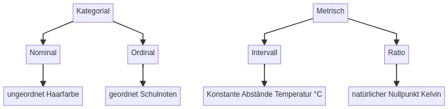
VL 2 Univariate Statistik
Datenmatrix/Rohdaten
- Datenmatrix/Urliste
- Spalten \(\rightarrow\) Variablen
- Zeilen \(\rightarrow\) Fälle
Häufigkeiten
frequenz und Häufigkeit
Absolute Häufigkeit: \(Hx_k = fx_k\)
Relative Häufigkeit: \(hx_k = \frac{fx_k}{n}\)
prozentuale Häufigkeit: \(\text{Prozente}=hx_k\cdot100\)
Kumulierte Häufigkeit
Die kumulierte Häufigkeit zkählt die Prozente der Zeile in der sie steht und alle vorgehenden zusammen.
politisches Interesse Allbus:
| Kategorie | \(Hx_k\) | \(hx_k\) | \(hx_k\cdot100\) | kumulierte prozentuale Häufigkeit |
|---|---|---|---|---|
| sehr stark | 425 | 0,122 | 12,2 | 12,2 |
| stark | 877 | 0,251 | 25,1 | 37,3 |
| mittel | 1437 | 0,412 | 41,2 | 78,5 |
| wenig | 564 | 0,162 | 16,2 | 94,7 |
| überhaupt nicht | 186 | 0,053 | 5,3 | 100 |
| Gesamt | 3490 | 1,000 | 100 |
Darstellungsarten
| Diagrammtyp | Variablenskala | zu beachten |
|---|---|---|
| Piechart | nominal | nur wenig Kategorien |
| Säulendiagramm | nominal, ordinal | Reihenfolge auf X-Achse |
| Histogramm | intervall, ratio | hat Zweck Fläche darzustellen \(\Rightarrow\) Tipp: Polygonzug/Dichteverteilung mit angeben |
Summenzeichen
\[ \sum_{i=m}^{n} x_i~~=~~x_m + x_{m+1} + x_{m+2} + x_{m+3} + \ldots + x_n \]
Beispiel:
\(x\): 2,2,3,10,3 \[ \sum_{i=2}^{4} x_i~~=~~x_2 + x_3 + x_4~~=~~2+3+10~~=~~15 \] \[ \sum_{i=1}^{3} x_i \cdot 2~~=~~x_1\cdot 2 + x_2\cdot 2 + x_3\cdot 2~~=~~2\cdot 2 + 2\cdot 2 + 3\cdot 2=14 \] \[ \frac{\sum_{i=1}^{n}x_i}{n}~~=~~\frac{2+2+3+10+3}{5}=\frac{20}{5}=4 \]
VL 3 Univariate Statistik
Lagemaße und zentrale Tendenz
| Begriff | Definition | Anwendbar auf |
|---|---|---|
| Modus | Wert kommt am häufigsten vor | ratio, intervall, ordinal, nominal |
| Median | Teilt Menge in 2 gleichgroße Teile | ratio, intervall, ordinal |
| arithmetisches Mittel | Durchschnitt | ratio, intervall |
Median
n - ungerade: \(\tilde{x} = x_{\frac{n+1}{2}}\)
n - gerade: \(\tilde{x} = \frac{x_{\frac{n}{2}} + x_{\frac{n}{2}+1}}{2}\)
ungerade (mittlerer Wert = 6):
| \(x_1\) | \(x_2\) | \(\bf{x_3}\) | \(x_4\) | \(x_5\) |
|---|---|---|---|---|
| 3 | 5 | 6 | 8 | 12 |
gerade (Durchschnitt der mittleren beiden Werte = 7 (6+8/2)):
| \(x_1\) | \(x_2\) | \(\bf{x_3}\) | \(\bf{x_4}\) | \(x_5\) | \(x_6\) |
|---|---|---|---|---|---|
| 3 | 5 | 6 | 8 | 12 | 13 |
arithmetisches Mittel
Für Rohdaten: \[ \bar{x}=\frac{\sum_{i=1}^{n}x_i}{2} \]
Für Häufigkeitstabelle: \[ \bar{x}=\frac{\sum_{k=1}^{m}(x_k \cdot f_{x_{k}})}{2} \]
Um die mittlere Antwort, einen “Durchschnitt”, zu berechnen werden zuerst alle Antworten die gegeben wurden aufsummiert und im zweiten Schritt durch die Anzahl der Antworten (n) geteilt.
In der Datenmatrix/Urliste sind alle Antworten als \(x_i\)’s direkt ablesbar. Diese können einfach aufsummiert werden. Die Anzahl aller Antworten (n) kann an der ID des letzten Falls abgelesen werden (sofern keine Fälle dazwischenherausgefiltert wurden).
In der Häufigkeitstabelle kann man die einzelnen Antworten nicht so direkt ablesen wie in der Datenmatrix. Jedoch wissen wir, dass bspw. 400 Personen Antwortausprägung 1 gegeben haben, 600 Antwortausprägung 2 usw.. Antwort 1 kommt also 500 mal in der Datenmatrix vor, Antwort 2 600 mal usw.. Wir rechnen also die jeweilige Antwort MAL die Anzahl wie oft diese Antwort angegeben wurde. Die Anzahl aller Antworten (n) wird ermittelt indem die Häufigkeiten der einzelnen Antwortausprägungen addiert werden.
Dispersionsmaße/Lagemaße und Verteilungsformen
| Kriterien | Verteilung |
|---|---|
| Modus < Median < arithmet. Mittel | linkssteil/rechtsschief |
| arithmet. Mittel < Median < Modus | rechtssteil/linksschief |
| 2 Modi, Median = arithmet.Mittel, Modus weicht stark ab | bimodal |
| arithmet.Mittel, Modalwert und Median fast gleich | symmetrisch |
VL 4 Univariate Statistik
Variationsweite/Spannweite/Range
\[V=x_{max} - x_{min}\] Beispiel: höchster Wert 10, niedrigster Wert 7
\(\rightarrow \text{range} = 10-7 = 3\)
Nachteil: Starke Abweichungen einzelner Werte führen zu Fehlinterpretation
Interquartilsabstand/IQR
\[ \text{IQR} = Q_{0,75} - Q_{0,25} \] Wie der Median wird die Fläche der Verteilung nach Prozenten in Abschnitte unterteilt. Der IQR zerteilt die Verteilung in 4 Abschnitte mit gleich-vielen Werten. Der Abstand der beiden Schnitte ist der IQR.
Varianz
Durchschnittliche Abweichung vom Mittelwert \[ \text{Varianz:~~~~~}\sigma^2 = \frac{\sum^{n}_{i=1}(x_i-\bar{x})^2}{n} \] \[ \text{Standardabweichung:~~~~~}\sigma=\sqrt{\sigma^2} \]
Beispiel: Gefragt wurden 1.000 Personen, wie hoch ihre monatliche Handyrechnung ist. Der Mittelwert liegt bei 40 Euro und die Standardabweichung bei 27. Das heißt, dass die durchschnittliche Entfernung aller Antworten zum Mittelwert 27 Euro beträgt.
Man schreibt wiefolgt:
\(\bar{x} = 40\)€
\(\sigma = 27\)€
\(\bar{x} = 40\pm 27\)€
\(x_i - \bar{x}\) berechnet den Abstand des Punktes \(i\) zum Mittelwert der Verteilung. Um den Durchschnittlichen Abstand pro Punkt zu erhalten wird durch \(n\) geteilt.
Problem: Der Mittelwert wird genau so berechnet, dass der Gesamtabstand aller Punkte über dem Mittelwert dem Gesamtabstand aller Punkte unter dem Mittelwert entspricht. Wenn man nun den einfachen Abstand aller Punkte zusammenrechnen würde (\(\sum^{n}_{i=1}x_i - \bar{x}\)), addiert man die Abstände aller Punkte über dem Mittelwert und subtrahiert die Abstände aller Punkte unter dem Mittelwert (die Abstände sind relativ zum Mittelwert gesehen negativ). Das Ergebnis wäre also immer 0.
Um trotz dieses Problems ein Maß für die durchschnittliche Abweichung vom Mittelwert zu erhalten, werden die Abstände quadriert. Das Quadrat ist immer positiv, allerdings werden auch die einzelnen Werte verzerrt. Je größer der Abstand vom Mittelwert bereits ist, desto größer wird auch das Quadrat. Um die so berechnete Varianz wieder in die Einheit der Rohwerte zu bringen wird für die berechnung der Standardabweichung noch die Wurzel gezogen.
VL 5 Univariate Statistik
Boxplot
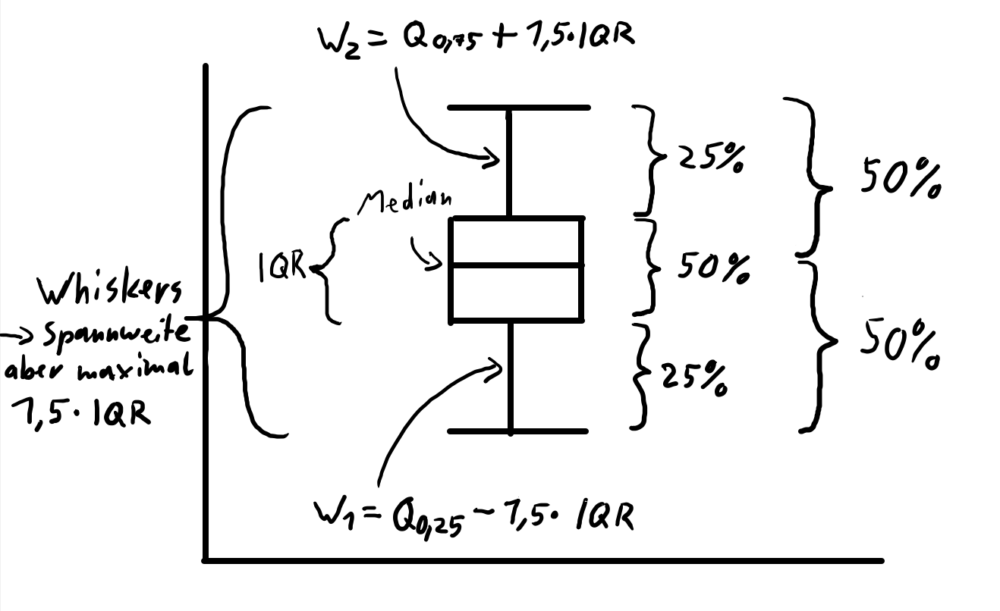
Ausreißer und Extremwert
- Ausreißer: \(1,5\cdot \text{IQR}\) über 3./unter 1. Quartil
- Extremwert: \(3\cdot \text{IQR}\) über 3./unter 1. Quartil
Variationskoeffizient V
Mit dem Variationskoeffizienten können Streuungen verschiedener Verteilungen verglichen werden. \[\text{V} = \frac{\sigma}{\bar{x}} = \frac{\text{Standardabweichung}}{\text{arithm. Mittel}}\]
Z-Transformation/Z-Wert
Mit dem Z-Wert können einzelne Werte verschiedener Verteilungen verglichen werden. \[\text{z} = \frac{x_i - \bar{x}}{\sigma}\]
- Der Mittlwert aller Z-Werte einer Verteilung ist immer 0
- Die Varianz aller Z-Werte einer Verteilung ist immer 1
VL 6 Bivariate Statistik
Kreuztabelle/Kontingenztafel
- für nominale/ordinale Variablen
- Konvention: Zeile-abhängig / Spalte-unabhängig
| Tutorium besucht | Tutorium nicht besucht | Gesamt | |
|---|---|---|---|
| bestanden | 9 | 59 | 68 |
| nicht bestanden | 2 | 14 | 16 |
| Gesamt | 11 | 73 | 84 |
VL 7 Bivariate Statistik
Kreuztabellen
Es gibt 2 Arten von Kreuztabellen:
Kontingenztabelle - enthält beobachtete Werte
Indifferenztabelle - enthält erwartete Werte
Erwartete Häufigkeit
\[\text{f}_{e(ij)}=\frac{\text{Zeilensumme}\cdot\text{Spaltensumme}}{n}\]
Die Gleichung kann leicht umgestellt werden in: \(\text{f}_{e(ij)}=\text{Zeilensumme}\cdot\frac{\text{Spaltensumme}}{n}\). Nun wird deutlich, dass ”Spaltensumme durch n” ein Prozentsatz ist (äquivalent geht auch \(\text{Spaltensumme}\cdot\frac{\text{Zeilensumme}}{n}\), was im Grunde dasselbe ist).
Dieser Spaltensummenprozentsatz wird nun durch das Malrechnen auf alle Fälle der jeweiligen Zeile der Zelle angewendet. So entsteht der erwartete Wert.
Wir übertragen also die gewussten Prozente der einen Variable auf die zweite Variable. Wenn 12% aller Menschen rauchen, erwarten wir, dass auch 12% aller Männer und 12% aller Frauen rauchen.
Residuen
Residuen sind die Differenz beobachteter und erwarteter Werte. Je weiter erwartete und beobachtete Werte auseinanderliegen desto eher vermuten wir einen Zusammenhang. Wenn wir erwarten, dass 12% aller Menschen rauchen (Zeilensumme), dann erwarten wir auch, dass 12% aller Männer und 12% aller Frauen rauchen. Wenn die beobachteten Werte aber stark abweichen, die Residuen also groß sind, hat die Variable Geschlecht einen Einfluss auf die Verteilung der Raucher.
Chi-Quadrat
\[\chi^2 = \sum_{i=1}^{k} \sum_{j=1}^{m} \frac{(f_{ij} - f_{eij})^2}{f_{eij}}\]
Für jede Zelle werden die Abstände von beobachtetem und erwartetem Wert (Residuen) berechnet(\(f_{bij} − f_{eij}\)). Da wir nur an den positiven Abständen interessiert sind (wie schon bei der Varianz) wird das Residuum der Zelle quadriert. Nun wird durch den erwarteten Wert geteilt, weil von keinem Zusammenhang, also den erwarteten Werten ausgegangen wird. Die bisher beschriebene Rechnung wird für alle Zellen einzeln ausgeführt und zusammengezählt. Das wird in der Gleichung damit erreicht, dass die Ergebnisse der Formel für alle Zellen aufsummiert werden. Also in einer \(2\times2\) Tabelle: i=1 j=1, i=2 j=1, i=1 j=2, i=2 j=2. (\(\sum^m_{j=1} \sum^k_{i=1}\)).
\(0 < \chi^2 < \infty\)
Je größer der Wert desto größer der Zusammenhang (0: kein Zusammenhang)
Problem \(\chi^2\) ist für denselben Zusammenhang unterschiedlich groß, wenn ein anderes \(n\) und/oder eine unterschiedliche Kategorienzahl vorliegt
Normierung Chi-Quadrat mit Phi, C, Cramer’s V$
Phi: \(\phi\)
\(\phi\) korrigiert die Abhängigkeit von . Es ist sinnvoll in die Analyse mit einzubeziehen, wenn man den Zusammenhang unabhängig von der Gesamtzahl interpretieren möchte, zum Beispiel wenn unterschiedlich große Verteilungen mit der selben Kategorienanzahl verglichen werden sollen.
\[\phi = \sqrt{\frac{\chi^2}{n}}\]
- \(0 < \phi < 1, wobei 0: kein Zusammenhang; 1: maximaler Zusammenhang\)
Kontingenzkoeffizient C
\(C\) korrigiert die Abhängigkeit \(\chi^2\)’s von der Anzahl der Kategorien und von n. Allerdings muss die Kategorienzahl bei der Berechnung von \(C_{max}\) mit einbezogen werden. Verschiedene Kontingenztabellen haben also unterschiedliche maximale \(C\) Werte. \[C = \sqrt{\frac{\chi^2}{\chi^2 + n}}\] \[C_{\text{max}} = \sqrt{\frac{R-1}{R}}\]
\(0 < C < C_{\text{max}}\)
Beispiele für R:
- \(2 \times 2\): R = 2
- \(3 \times 4\): R = 3
- \(4 \times 3\): R = 3
Cramer’s V
Cramer’s V wird für den Vergleich von \(\chi^2\) zwischen verschieden großen Kreuztabellen genutzt. \[\text{Cramér's V} = \sqrt{\frac{\chi^2}{\chi^2_{\text{max}}}} = \sqrt{\frac{\chi^2}{n \cdot (R-1)}} = \sqrt{\frac{\chi^2}{n \cdot (\min(k, m) - 1)}}\]
- \(0 < \text{Cramer's V} < 1\)
| Cramer’s V bzw. Phi | Interpretation |
|---|---|
| ≤ 0,05 | kein Zusammenhang |
| > 0,05 bis 0,10 | sehr schwacher Zusammenhang |
| > 0,10 bis 0,20 | schwacher Zusammenhang |
| > 0,20 bis 0,40 | mittelstarker Zusammenhang |
| > 0,40 bis 0,60 | starker Zusammenhang |
| > 0,60 | sehr starker Zusammenhang |
VL 8 Bivariate Statistik
Spearmans (Rho)
- Zusammenhänge zwischen ordinalen Variablen herstellen.
\[\rho = 1 - \frac{6 \cdot \sum^{n}_{i=1}{d^2_i}}{n \cdot (n^2-1)}\] \[d_i = R(x_i) - R(y_i)~~~\textrm{(Differenz der Rangplätze)}\]
- \(-1 < \rho < 1\)
VL 9 Bivariate Statistik
PRE Maße
Lambda
Lambda wird für nominale und ordinale Skalenniveaus verwendet. Mit Prozenten und Mittelwerten kann eine Vorhersagee für eine Variable formuliert werden. Um zu bestimmen ob sich die Vorhersage verbessert, wenn eine zweite Variable mit einbezogen wird kann durch PRE-Maße getestet werden. Je stärker die beiden Variablen zusammenhängen, desto besser wird die Vorhersage. \(\text{E}\) steht für den Fehler bzw. die Ungenauigkeit der Vorhersage.
\[ \lambda = \frac{\text{E}_1 - \text{E}_2}{\text{E}_1} \] \[ \text{E}_1 = 1- \frac{H_{\text{Modal}}}{n} \]
Für die “Hauptvariable 1” ist die beste Vorhersage der Prozentuale Anteil der häufigsten Kategorie (\(\frac{h_{\text{Modal}}}{n}\)). Die häufigste Kategorie wird Modalkategorie genannt (vgl. Modus). Beispiel: Wenn 9 von 10 Zahnärzten eine Zahnpasta empfehlen, gehört ein bisher unbekannter 11. Arzt zu einer Wahrscheinlichkeit von 90% zur Gruppe die die Zahnpaste empfiehlt. Der Fehler bei einer Vorhersage ist dann die Wahrscheinlichkeit, dass die Vorhersage auf Basis der Modalkateogorie falsch ist - also der 10%ige Fall eintritt, dass der 11. Arzt die Zahnpaste nicht empfielt(\(1-0.9=0.1\)).
\[ \text{E}_2 = \sum^{J}_{j=1}\frac{H_j}{n}(1-\frac{H_{Mj}}{H_j}) \]
Wenn nun eine zweite Variable mit in die Vorhersage einbezogen werden soll, ist die beste Vorhersage nichtmehr mit den Gesamtprozenten sondern deren Überschneidungen zu rechnen. Beispiel: Statt nur auf Basis der Ärzte zu rechnen kann hinzugezogen werden, ob ein Arzt die Zahnpasta selbst nutzt. Wie vorher berechnen wir mit \(1-\frac{H}{\text{irgendwas}}\) den Schätzfehler in Prozent. Danach wird der Fehler mit den Zeilenprozenten gewichtet.
| Nutzt Zahnpasta selbst? | Empfiehlt Zahnpasta | Empfiehlt Zahnpasta nicht | Summe |
|---|---|---|---|
| Ja | 7 | 0 | 7 |
| Nein | 2 | 1 | 3 |
| Summe | 9 | 1 | 10 |
\[ \text{E}_2 = \frac{7}{10}(1-\frac{7}{7}) + \frac{3}{10}(1-\frac{2}{3}) = 0,1 \]
\(\text{E}_1\) und \(\text{E}_2\) müssen nun nur noch in die \(\lambda\) Formel eingesetzt werden.
\[ \lambda = \frac{0,1 - 0,1}{0,1} = \frac{0}{0,1} = 0 \] Die Vorhersage wird nicht verbessert \(\Rightarrow\) es gibt keinen Zusammen zwischen den Variablen.
Eta-Quadrat
\(\eta^2\) wird für nominale und metrische Skalenniveaus verwendet. Die Logik ist dieselbe wie bei \(\lambda\), nur, dass der Fehler für metrische Variablen durch die Quadratsumme der Abstände zum Mittelwert berechnet wird (vgl. Varianz \(\Rightarrow\) je kleiner die Varianz, desto genauer der Mittelwert als Vorhersage).
\[ \lambda = \frac{\text{QS}_{\text{gesamt}} - \text{QS}_{\text{innerhalb}}}{\text{QS}_{\text{gesamt}}} \] \[ \text{QS}=\sum(\text{Wert}_i-\text{Mittelwert})^2 \]
\(\text{QS}_gesamt\) berechnet sich aus der Quadratsumme für die metrische Variable alleine.
Um \(\text{QS}_innerhalb\) zu berechnen müssen wir die Fälle durch hinzunahme der nominalen Variable in mehrere Gruppen unterteilen. Für jede Gruppe muss nun einzeln nocheinmal die Quadratsumme berechnet werden und das Ergebnis aller Gruppen zusammengerechnet werden.
Ein Beispiel findet sich in den Tutoriumsfolien ab Folie 17.
Link zu den Tutoriumsfolien mit ausführlicher Erklärung und Beispielen
Korrelation
Kovarianz
\[\text{cov}(X,Y) = \frac{\sum_{i=1}^{n} (x_i - \bar{x}) (y_i - \bar{y})}{n}\]
gemeinsame Abweichung von den Mittelwerten
positiv, wenn x und y beide in dieselbe Richtung abweichen
- \(x\) unter \(\bar{x}\) und gleichzeitig \(y\) auch unter \(\bar{y}\) ODER \(x\) über \(\bar{x}\) und gleichzeitig \(y\) auch über \(\bar{y}\)
negativ, wenn x und y beide gleichzeitig in unterschiedliche Richtungen abweichen
- \(x\) unter \(\bar{x}\) und gleichzeitig \(y\) über \(\bar{y}\) ODER \(x\) über \(\bar{x}\) und gleichzeitig \(y\) unter \(\bar{y}\)
Null, wenn Abweichungen nicht miteinander korrelieren
- Abweichungsrichtungen von x und y unabhängig voneinander
\(\text{cov}\) ist abhängig von den Maßeinheiten der Merkmale
Pearson’s r
\[r = \frac{\text{cov}(x; y)}{s_x \cdot s_y} = \frac{\sum_{i=1}^{n} (x_i - \bar{x}) \cdot (y_i - \bar{y})}{\sqrt{\sum_{i=1}^{n} (x_i - \bar{x})^2 \cdot \sum_{i=1}^{n} (y_i - \bar{y})^2}}\]
- standardisiert Kovarianz mit den Standardabweichungen
- \(-1 < r < 1\)
- -1: stark negativer Zusammenhang
- 0: kein Zusammenhang
- 1: stark positiver Zusammenhang
VL 10 Überleitung Inferenz
| Stichprobe | Wahrscheinlichkeitsverteilungen | Grundgesamtheit | |
|---|---|---|---|
| Kennwerte | Parameter | Parameter | Parameter |
| Mittelwert | \(\bar{x}\) | Erwartungswert \(\mu\) | Mittelwert \(\mu\) |
| Standardabweichung | \(s\) | Standardabweichung \(\sigma\) | Standardabweichung \(\sigma\) |
| Varianz | \(s^2\) | Varianz \(\sigma^2\) | Varianz \(\sigma^2\) |
Normalverteilung
- Können verschiedene Mittelwerte und Standardabweichungen besitzen
- Häufigkeitsdarstellung (“Wahrscheinlichkeitsdichte”)
- Werte um den Mittelwert kommt häufiger vor (höhere Kurve)
- Fläche unter der Kurve immer = 1 \[\mathcal{N}(\mu, \sigma^2)\] ## Standardnormalverteilung
- Normalverteilung mit Mittelwert 0 und Standardabweichung 1
- “Einheit” der unteren Achse sind Standardabweichungen
- 1 = 1 Standardabweichung über 0
- -2 = 2 Standardabweichungen unter 0 \[\mathcal{N}(0, 1)\]
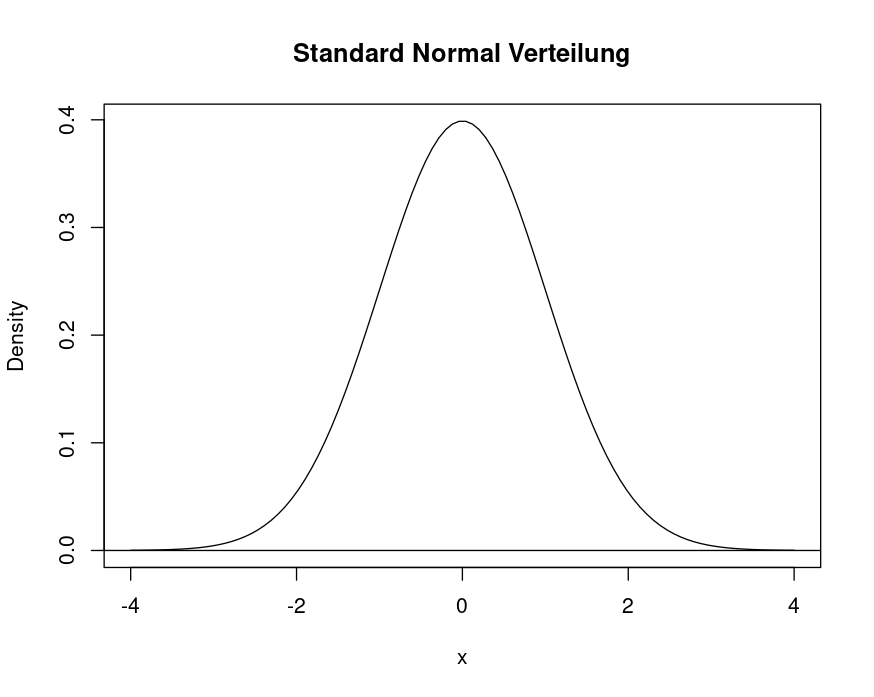
Gesetz der großen Zahlen
Je größer die Stichprobe ist, desto geringer wird der Standardfehler (\(\sigma_{\bar{x}}=\frac{\sigma}{\sqrt{n}}\)) Wenn man die Formel betrachtet erkennt man, dass eine steigende Stichprobe durch ein immer größerwerdendes \(n\) repräsentiert wird. Setzen wir für \(n\) testweise einen Sehr großen Wert ein, reicht ein konstantbleibender/nur gering steigender Wert für \(\sigma\) aus, sodass das Ergebnis des Bruchs sehr klein wird.
Zentrales Grenzwerttheorem
Es liegt eine unabhängige und identisch verteilte Zufallsvariable vor. Aus einer Grundgesamtheit werden nun unendlich viele Stichproben gezogen und deren Mittelwerte berechnet. Egal wie die Verteilung der Variable in der Grundgesamtheit ist, es ergibt sich immer eine Normalverteilung um den Mittelwert der Variable. Nach einer Z-Transformation der gesammelten Werte ergibt sich also auch immer eine Standardnormalverteilung. Je mehr Stichproben gezogen werden desto stärker nähert sich die Verteilung einer Standardnormalverteilung an (Videotipp!).
\(\Rightarrow\) Aussagen über Grundgesamtheit nur über Stichproben möglich!!
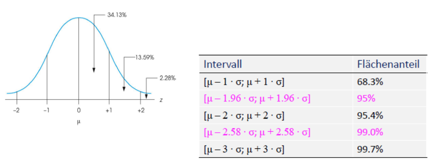
Hinführung: Fläche unter der Kurve
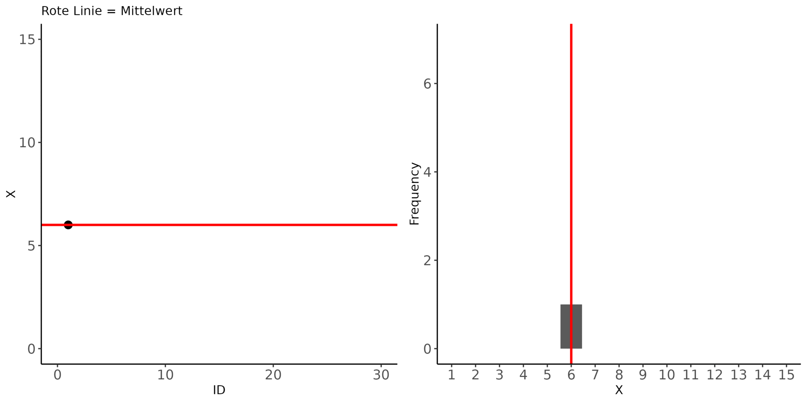 In der Animation wird pro Zeitschritt der Wert mit der nächsten ID generiert. Auf der rechten Seite werden die Antworten (nur ganze Zahlen zwischen 1 und 15) diskret dargestellt. Wenn wir nun wissen möchten wie viele Personen Antwort 8 gegeben haben reicht es die gestapelten “Blöcke” des Balkendiagrams zu zählen. Wenn wir wissen möchten wie viele Personen eine Antwort zwischen 5 und 9 gegeben haben müssen wie alle Blöcke zwischen 5 und 9 zählen.
Die Fläche unter einer Normalverteilung funktioniert genau so, nur, dass die horizontale Achse kontinuierlich verteilt ist. Statt Blöcke zu zählen um die Fläche anzugeben nutzen wir die Z-Tabelle um die Fläche unter der Kurve zu bestimmen.
Wozu? Wir wissen, dass sich eine unabhängig und identisch verteilte Stichprobe mit mehr Fällen sich nach einer Z-Transformation der Normalvertielung annähert. Im Beispiel der Animation könnte so die Frage beantwortet werden wie viel Prozent der Grundgesamtheit denn nun 10 oder Werte darüber angeben würden. Statt Blöcke zu zählen bestimmen wir die Fläche mit der Z-Tabelle.
Z-Tabelle
In der Z-Tabelle ist die Fläche in Prozent eingetragen, die links vom an den Achsen zu findenden Z-Wert liegt. Links des Z-Wertes \(-1,28\) befinden sich circa \(10\%\) der Fläche unter der Normalverteilung.
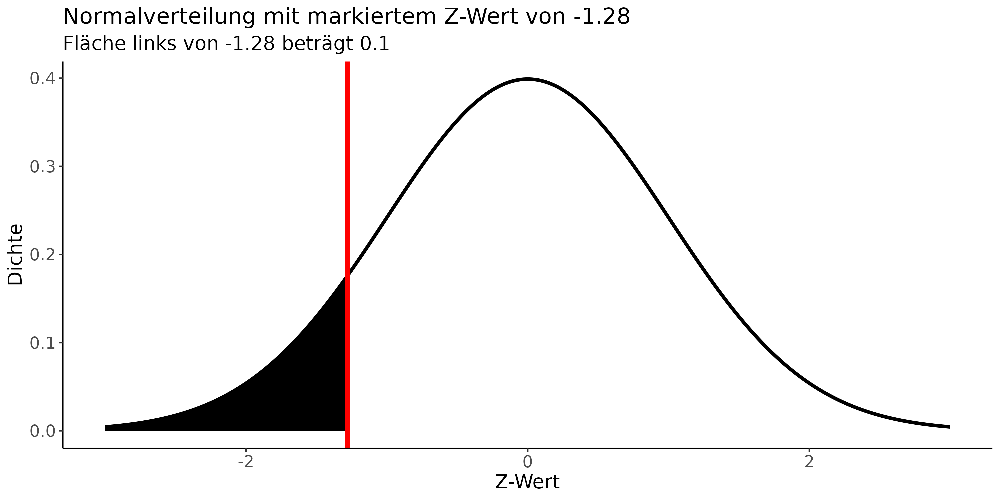 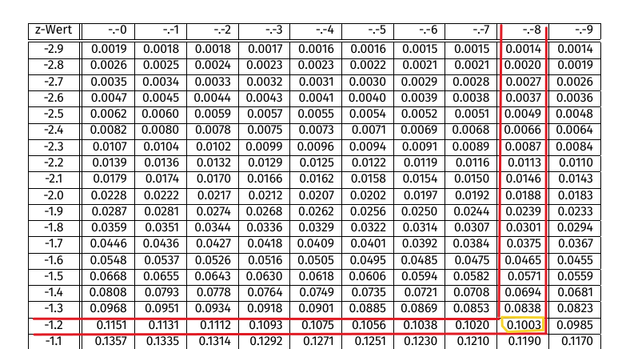
Rohwert und Z-Wert umrechnen
Um Aussagen über bestimmte Variablen zu treffen müssen wir zwischen Rohwerten und Z-Werten übersetzen können.
- \(z = \frac{x - \mu}{\sigma}\)
- \(x = \mu + z\cdot\sigma\)
Aufgaben
VL 1
Skalenniveaus und Variablen
Gib das Skalenniveau der folgenden Variablen an:
Ordinal, denn geordnet, Abstände nicht quantifiziert (können unterschiedlich sein)
Ratio, denn geordnete konstante Abstände, Nullpunkt ist natürlich
Intervall, denn (geordnet, circa konstante Abstände aber kein antürlicher Nullpunkt)
Sind die folgende Variablen diskret oder stetig?
Stetig, denn kann immer weiter verfeinert werden
Diskret, denn (es gibt keine halben Kinder)
VL 2
Häufigkeiten
politisches Interesse Allbus:
| Kategorie | \(Hx_k\) | \(hx_k\) | \(hx_k\cdot100\) | kumulierte prozentuale Häufigkeit |
|---|---|---|---|---|
| sehr stark | 425 | 0,122 | 12,2 | 12,2 |
| stark | 877 | 0,251 | 25,1 | 37,3 |
| mittel | 1437 | 0,412 | 41,2 | 78,5 |
| wenig | 564 | 0,162 | 16,2 | 94,7 |
| überhaupt nicht | 186 | 0,053 | 5,3 | 100 |
| Gesamt | 3490 | 1,000 | 100 |
\(37,3\%\)
\(100\%-37,3\%=62,7\%\)
\(94,7\%-12,2\%=82,5\%\)
Summen
\(=14\)
\(=9\)
\(14\)
\(=48\)
\(=14^2\)
\(=13\)
\(=9\)
\(=25\)
\(=81\)
\(=\frac{9}{5}=1,8\)
\(=\frac{12}{5}\)
VL 3
4
5
rechtssteil/linksschief
VL 4
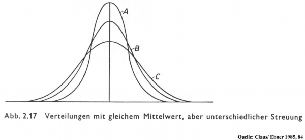
\[ IQR_A < IQR_B < IQR_C \]
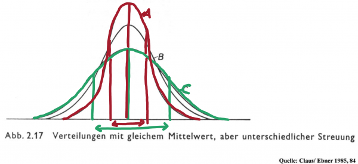
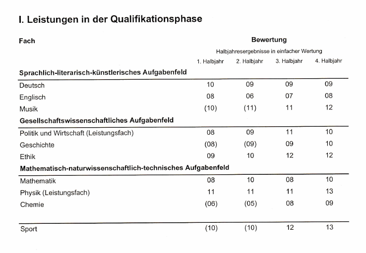
\(\frac{10+9+9+9}{4}=9,25\)
Varianz: \(\frac{(10 - 9,25)^2 + (9 - 9,25)^2 + (9 - 9,25)^2 + (9 - 9,25)^2}{4} = \frac{(0,75)^2 + (-0,25)^2 + (-0,25)^2 + (-0,25)^2}{4}\) \(= \frac{0,5625 + 0,0625 + 0,0625 + 0,0625}{4} = \frac{0,75}{4}\) \(= 0,1875\)
Standardabweichung: \(\sqrt{0,1875} = 0,433\)
Der Median ist niedriger, weil die 13 Punkte als “Ausreißer” den Mittelwert mit nach oben ziehen. In Verteilungen mit wenigen hohen Werten bevorzugt man deshalb den Median um die “Lage der Verteilung” zu beschreiben.
VL 5
Gegeben sind eine Obstschüssel voller Äpfel und eine Obstschüssel voller Birnen. Jeder Apfel und jede Birne werden nach Ästhetik auf einer Skala von 1-10 bewertet und die Bewertungen notiert.
Runde alle Rechnungen auf 2 Nachkommastellen
| Apfel-ID (Apfelnummer) | Bewertung Äpfel |
|---|---|
| 1 | 9 |
| 2 | 7 |
| 3 | 5 |
| 4 | 6 |
| 5 | 7 |
| Birnen-ID (Birnennummer) | Bewertung Birnen |
|---|---|
| 1 | 3 |
| 2 | 2 |
| 3 | 8 |
| 4 | 10 |
| 5 | 1 |
1. Berechne Durchschnitt und Standardabweichung für Äpfel und Birnen
\[\bar{x}_{Äpfel} = 6,8\] \[\bar{x}_{Birnen} = 4,8\]
\[\sigma_{Äpfel} = \pm 1,33\] \[\sigma_{Birnen} = \pm 3,54\]
2. Erstelle einen Zahlenstrahl für die Werte der Äpfel und einen für die Werte der Birnen, markiere auch den Durchschnitt und zeichne das Intervall der Standardabweichung ein.
(Der Grüne Punkt markiert die 0, die Standardabweichung ist nicht eingetragen)
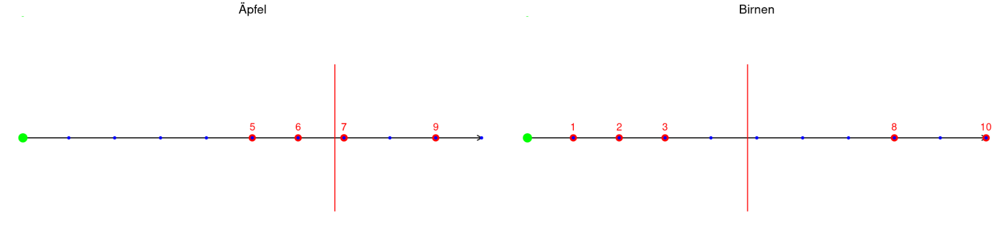
3. Berechne für jeden Wert der Äpfel und für jeden Wert der Birnen den dazugehörigen Zwert
| Apfel-ID | Z-Apfel | Birnen-ID | Z-Birnen |
|---|---|---|---|
| 1 | 1,48 | 1 | -0,45 |
| 2 | 0,13 | 2 | -0,71 |
| 3 | -1,21 | 3 | 0,81 |
| 4 | -0,54 | 4 | 1,31 |
| 5 | 0,13 | 5 | -0,96 |
4. Erstelle nun zwei neue Zahlenstrahle, in der Nähe der ursprünglichen Zahlenstrahlen auf deinem Zettel. Zeichne hier alle Z-Werte ein.
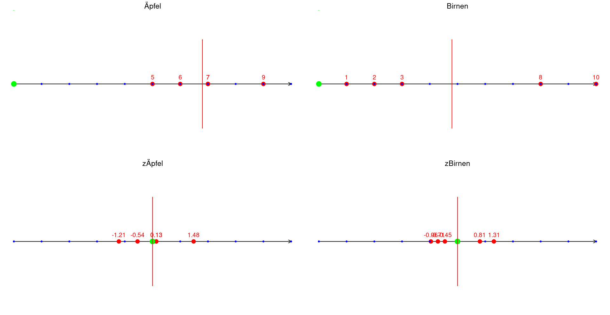
Durch die Z-Transformation haben sich die Werte verschoben. Der Mittelwert wird immer auf die 0 geschoben. Der Rest der Verteilung wird so “zusammengedrückt” oder “auseinandergezogen”, dass die Standardabweichungen auf 1 gesetzt werden. Alle Werte der Verteilung werden relativ dazu angeordnet (Werte die wenig rechts vom Mittelwert lagen liegen wieder wenig rechts vom Mittelwert etc.)
5. Nun vergleichen wir Äpfel mit Birnen: Welche Frucht ist insgesamt am besten bewertet?
Apfel Nummer 1 ist die Frucht, die am weitesten über dem Durchschnitt liegt, da der Z-Wert am höchsten positiv ist.
VL 6
| Tutorium besucht | Tutorium nicht besucht | Gesamt | |
|---|---|---|---|
| bestanden | 9 | 59 | 68 |
| nicht bestanden | 2 | 14 | 16 |
| Gesamt | 11 | 73 | 84 |
\(\frac{14}{84}=16,6\%\)
\(\frac{68}{84}=80,9\%\)
\(\frac{9}{11}=81,8\%\)
\(\frac{9}{68}=13,2\%\)
Ergänze folgende Kreuztabelle (Statistisches Bundesamt):
| Geschlecht x Rauchen | Raucher | Nichtraucher | Gesamt |
|---|---|---|---|
| männlich | 5059 | A | 22 684 |
| weiblich | B | C | 23 547 |
| Gesamt | 8 738 | D | 46 231 |
\(22684 - 5059 = 17625\)
\(8738 - 5059 = 3679\)
\(23547 - 3679 = 19868\)
\(17625 + 19868 = 37493\)
VL 7
Aufgabe aus dem Tutorium
Beobachtete Werte:
| Geschlecht x Rauchen | Raucher | Nichtraucher | Gesamt |
|---|---|---|---|
| männlich | 5 059 | 17 625 | 22 684 |
| weiblich | 3 679 | 19 868 | 23 547 |
| Gesamt | 8 738 | 37 493 | 46 231 |
Erwartete Werte:
| Geschlecht x Rauchen | Raucher | Nichtraucher | Gesamt |
|---|---|---|---|
| männlich | 4 287,443 | 18 396,56 | 22 684 |
| weiblich | 4 450,557 | 19 096,44 | 23 547 |
| Gesamt | 8 738 | 37 493 | 46 231 |
\[ \chi^2 = \sum_{i=1}^{k} \sum_{j=1}^{m} \frac{(f_{b_{ij}} - f_{e_{ij}})^2}{f_{e_{ij}}} \] \[ = \frac{(5059 - 4287,443)^2}{4287,443} + \frac{(17625-18396,56)^2}{18396,56} + \frac{(3679 - 4450,557)^2}{4450,557} + \frac{(19868 - 19096,44)^2}{19096,44} \] \[ = 138,847 + 32,360 + 133,759 + 31,174 \] \[ = 336,14 \]
- Im Verhältnis zur Größe der Fallzahl ist der Wert ziemlich gering. \(\rightarrow\) kein Zusammenhang
\[ \phi = \sqrt{\frac{336,14}{46231}} = 0,085 \] - Der Wert liegt nahe an 0 \(\rightarrow\) kein Zusammenhang
R = 2 \[ C = \sqrt{\frac{\chi^2}{\chi^2 + n}} = \sqrt{\frac{336,14}{336,14 + 46231}} = 0,085 \] \[ C_{\text{max}} = \sqrt{\frac{R - 1}{R}} = \sqrt{\frac{2-1}{2}} = 0,707 \] - Verglichen mit dem Maximalen Wert ist C sehr klein \(\rightarrow\) kein Zusammenhang
\[ \text{Cramer's V} = \sqrt{\frac{\chi^2}{n \cdot (R - 1)}} = \sqrt{\frac{336,14}{46231 \cdot (2 - 1)}} = 0,085 \]
In Tabelle schauen \(\rightarrow\) sehr schwacher Zusammenhang
Aufgabe aus der Vorlesung
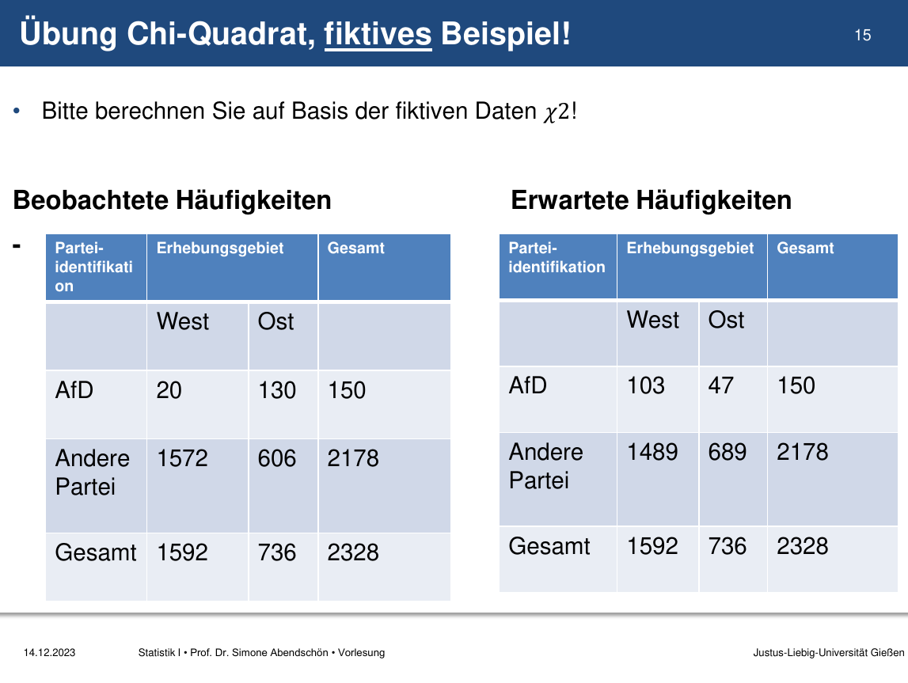
\[ \chi^2 = \sum_{i=1}^{k} \sum_{j=1}^{m} \frac{(f_{bij} - f_{eij})^2}{f_{eij}} \] \[ = \frac{(20-103)^2}{103} + \frac{(130-47)^2}{47} + \frac{(1572-1489)^2}{1489} + \frac{(606-689)^2}{689} \] \[ = \frac{(-83)^2}{103} + \frac{(83)^2}{47} + \frac{(83)^2}{1489} + \frac{(-83)^2}{689} \] \[ = \frac{6889}{103} + \frac{6889}{47} + \frac{6889}{1489} + \frac{6889}{689} \] \[ = 66,88 + 146,58 + 4,63 + 10 \] \[ = 228,09 \] Im Vergleich zu n=2328 ist 228,09 nur ein kleiner Wert und schwer zu Interpretieren.
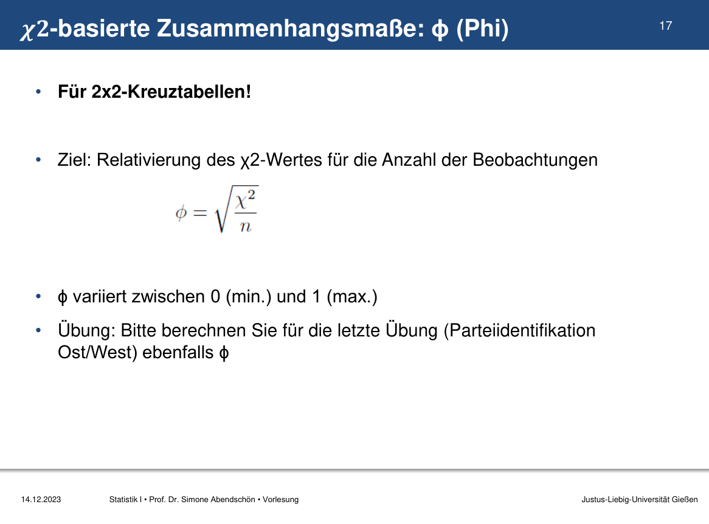
\[ \phi = \sqrt{\frac{228,09}{2328}} = 0.31 \] Es handelt sich um einen mittelstarken Zusammenhang. Die fiktiven Personen aus den Beispieldaten können sich demnach eher mit der AFD identifizieren, wenn sie aus Ostdeutschland kommen.
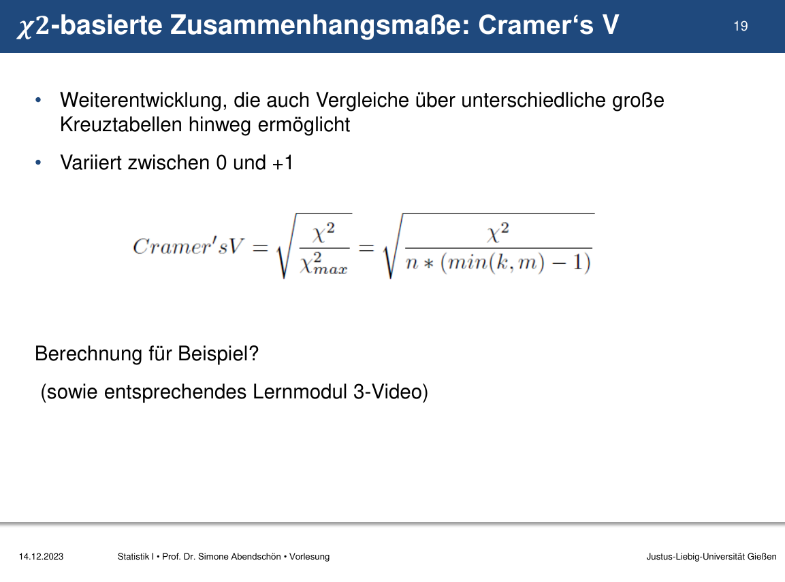
Es handelt sich um eine \(2\times2\) Tabelle \(\Rightarrow R = 2\) \[ \text{Cramer's V} = \sqrt{\frac{\chi^2}{n \cdot (R - 1)}} = \sqrt{\frac{228,09}{2328 \cdot (2 - 1)}} = 0.31 \] Auch durch Cramer’s V Kategorien-Kontrolle zeigt sich ein mittelstarker Zusammenhang. Die fiktiven Personen aus den Beispieldaten können sich demnach eher mit der AFD identifizieren, wenn sie aus Ostdeutschland kommen.
VL 8
Übung aus dem Tutorium
In einer kleinen Studie gaben 5 Personen ihre Vorlieben für zwei verschiedene Musikgenres ab. Dabei wurde eine Likertskala mit 1 = “mag ich gar nicht” bis 5 = “mag ich sehr” verwendet.
Frage: Gibt es einen Zusammenhang zwischen den Musikgenres?
Berechne Spearman’s \(\rho\) um die Frage zu beantworten.
| Person | Genre A | Genre B |
|---|---|---|
| 1 | 3 | 4 |
| 2 | 2 | 2 |
| 3 | 5 | 5 |
| 4 | 1 | 3 |
| 5 | 4 | 1 |
| 6 | 3 | 2 |
1. Ränge zuweisen
| Person | Genre A | Genre B | Rang Genre A | Rang Genre B |
|---|---|---|---|---|
| 1 | 3 | 4 | 3.5 | 4 |
| 2 | 2 | 2 | 2 | 2.5 |
| 3 | 5 | 5 | 5 | 5 |
| 4 | 1 | 3 | 1 | 3 |
| 5 | 4 | 1 | 4 | 1 |
| 6 | 3 | 2 | 3.5 | 2.5 |
2. Differenz der Ränge berechnen
| Person | Genre A | Genre B | Rang Genre A | Rang Genre B | Rang Differenz \(d\) |
|---|---|---|---|---|---|
| 1 | 3 | 4 | 3.5 | 4 | -0.5 |
| 2 | 2 | 2 | 2 | 2.5 | -0.5 |
| 3 | 5 | 5 | 5 | 5 | 0 |
| 4 | 1 | 3 | 1 | 3 | -3 |
| 5 | 4 | 1 | 4 | 1 | 3 |
| 6 | 3 | 2 | 3.5 | 2.5 | 1 |
3. Rho berechnen
\[ \rho = 1 - \frac{6 \cdot \sum^{n}_{i=1}{d^2_i}}{n \cdot (n^2-1)} \] \[ = 1 - \frac{6 \cdot ((-0.5)^2 + (-0.5)^2 + 0^2 + (-3)^2 + 3^2 + 1^2)}{n \cdot (n^2-1)} \] \[ = 1 - \frac{6 \cdot (0.25 + 0.25 + 0 + 9 + 9 + 1)}{6 \cdot (6^2-1)} \] \[ = 1 - \frac{117}{6 \cdot (36-1)} \] \[ = 1 - \frac{117}{6 \cdot 35} \] \[ = 1 - \frac{117}{210} \] \[ = 1 - 0.557 = 0.443 \]
Mittlere positive Korrelation \(\Rightarrow\) “Wer Genre A mag, mag wahrscheinlich auch Genre B”
Übung aus der Vorlesung
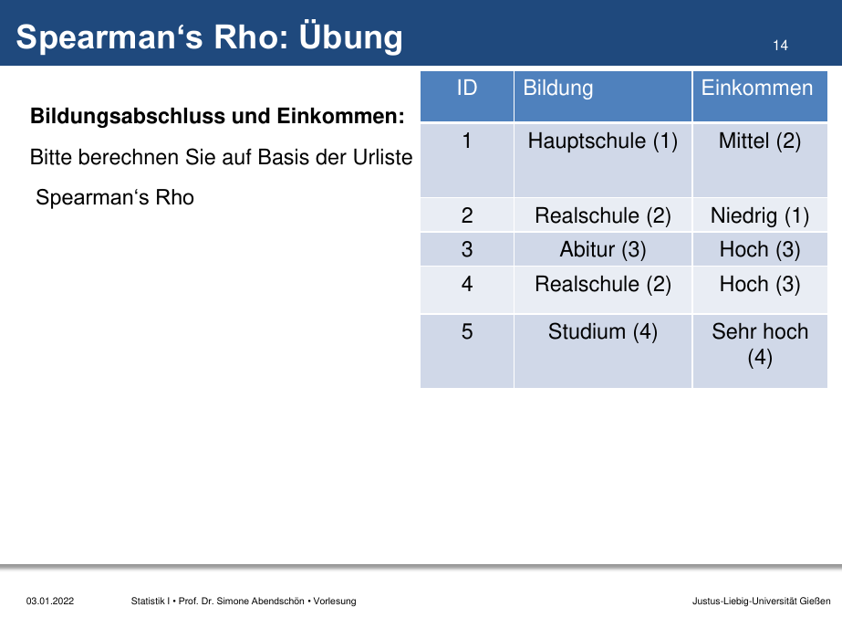
Schritt 1: Ränge zuweisen
Die Ränge sind in den Daten bereits gegeben und lauten wie folgt:
| ID | Bildung-Rang | Einkommen-Rang |
|---|---|---|
| 1 | 1 | 2 |
| 2 | 2,5 | 1 |
| 3 | 4 | 3,5 |
| 4 | 2,5 | 3,5 |
| 5 | 5 | 5 |
Schritt 2: Differenzen der Ränge berechnen
Die Differenzen zwischen den Rängen für jedes Paar sind:
- Person 1: \(d_1 = 1 - 2 = -1\)
- Person 2: \(d_2 = 2,5 - 1 = 1,5\)
- Person 3: \(d_3 = 4 - 3,5 = 0,5\)
- Person 4: \(d_4 = 2,5 - 3,5 = -1\)
- Person 5: \(d_5 = 5 - 5 = 0\)
Schritt 3: Quadrieren der Differenzen
Die quadrierten Differenzen sind:
- Person 1: \(d_1^2 = (-1)^2 = 1\)
- Person 2: \(d_2^2 = (1,5)^2 = 2,25\)
- Person 3: \(d_3^2 = (0,5)^2 = 0,25\)
- Person 4: \(d_4^2 = (-1)^2 = 1\)
- Person 5: \(d_5^2 = (0)^2 = 0\)
Schritt 4: Summe der quadrierten Differenzen
Die Summe der quadrierten Differenzen ist:
\(\sum d_i^2 = 1 + 2,25 + 0,25 + 1 + 0 = 4,5\)
Schritt 5: Spearman’s Rho Formel anwenden
Nun setzen wir unsere Werte in die Spearman’s Rho Formel ein:
\(\rho = 1 - \frac{6 \sum d_i^2}{n(n^2 - 1)}\)
wobei \(n\) die Anzahl der Beobachtungen ist (in diesem Fall 5):
\(\rho = 1 - \frac{6 \cdot 4,5}{5\cdot(5^2 - 1)}\)
\(\rho = 1 - \frac{27}{5\cdot(24)}\)
\(\rho = 1 - \frac{27}{120}\)
\(\rho = 1 - 0.225\)
\(\rho = 0.775\)
Das Endergebnis von 0.775 deutet auf eine mittelere-starke positive Korrelation zwischen Bildung und Einkommen hin.
VL 9
Lambda
Übung aus dem Tutorium
Echte Werte aus dem European Social Survey 2018
Berechne und interpretiere Lambda
Abhängige Variable: had a paid job
| had a paid job | never had a paid job | GESAMT | |
|---|---|---|---|
| männlich | 3414 | 602 | 4016 |
| weiblich | 4336 | 926 | 5262 |
| GESAMT | 7750 | 1528 | 9278 |
\(\text{E}_1 = 1 - \frac{7750}{9278} = 0,16\)
\(\text{E}_2 = (\frac{4016}{9278}(1-\frac{3414}{4016})) + (\frac{5262}{9278}(1-\frac{4336}{5262}))\) \(~~~~~= 0,16\)
\(\text{PRE} = \frac{\text{E}_1 - \text{E}_2}{\text{E}_1} = \frac{0,16 - 0,16}{0,16} = 0\)
- Keine Verbesserung der Vorhersage durch die Information über das Geschlecht.
Übung aus der Vorlesung
Sie wollen untersuchen, ob ältere Grundschulkinder mehr Taschengeld bekommen als jüngere. Sie haben dazu bei 10 Kindern die in der Tabelle abgetragenen Summen ermittelt. Zur Prüfung der Hypothese haben Sie zwei Kinder-Gruppen gebildet:
- Gruppe 1: Klasse 1 und 2
- Gruppe 2: Klasse 3 und 4
Berechnen Sie Eta-Quadrat und interpretieren Sie das Ergebnis!
| ID | Taschengeld pro Monat in Euro | Gruppe |
|---|---|---|
| 1 | 3 | 1 |
| 2 | 9 | 2 |
| 3 | 10 | 1 |
| 4 | 4 | 2 |
| 5 | 2 | 1 |
| 6 | 4 | 1 |
| 7 | 3 | 2 |
| 8 | 6 | 1 |
| 9 | 5 | 2 |
| 10 | 6 | 2 |
Schritt 1
Variablen identifizieren: \[ \text{Gruppe (unabhängig) (x)} \Rightarrow \text{Taschengeld pro Monat in Euro (abhängig) (y)} \] Arithmetisches Mittel als bester Vorhersagewert, wenn keine unabhängige Variable berücksichtigt wird (Quadratsumme gesamt) \[ \bar{y}=\frac{3+9+10+4+2+4+3+6+5+6}{10}=5,2 \]
Schritt 2
Quadratsumme gesamt
\[ \sum(y_i - \bar{y})^2 \] \[ = (3-5,2)^2 + (9-5,2)^2 + (10-5,2)^2 + (4-5,2)^2 + (2-5,2)^2 \] \[ + (4-5,2)^2 + (3-5,2)^2 + (6-5,2)^2 + (5-5,2)^2 + (6-5,2)^2 \] \[ =(-2,2)^2 + (3,8)^2 + (4,8)^2 + (-1,2)^2 + (-3,2)^2 \] \[ + (-1,2)^2 + (-2,2)^2 + (0,8)^2 + (-0,2)^2 + (0,8)^2 \] \[ = 4,84 + 14,44 + 23,04 + 1,44 + 10,24 + 1,44 + 4,84 + 0,64 + 0,04 + 0,64 \] \[ = 61.6 \]
Quadratsumme Gruppe 1
| ID | Taschengeld pro Monat in Euro | Gruppe |
|---|---|---|
| 1 | 3 | 1 |
| 3 | 10 | 1 |
| 5 | 2 | 1 |
| 6 | 4 | 1 |
| 8 | 6 | 1 |
\[ \bar{y} = \frac{3+10+2+4+6}{5}=5 \] \[ \sum(y_i - \bar{y})^2 = (3-5)^2 + (10-5)^2 + (2-5)^2 + (4-5)^2 + (6-5)^2 \] \[ = 2^2 + 5^5 + (-3)^2 + (-1)^2 + 1^2 \] \[ = 4 + 25 + 9 + 1 + 1 \] \[ = 40 \]
Quadratsumme Gruppe 2
| ID | Taschengeld pro Monat in Euro | Gruppe |
|---|---|---|
| 2 | 9 | 2 |
| 4 | 4 | 2 |
| 7 | 3 | 2 |
| 9 | 5 | 2 |
| 10 | 6 | 2 |
\[ \bar{y} = \frac{9+4+3+5+6}{5} = 5,4 \] \[ \sum(y_i - \bar{y})^2 = (9-5,4)^2 + (4-5,4)^2 + (3-5,4)^2 + (5-5,4)^2 + (6-5,4)^2 \] \[ = 3,6^2 + (-1,4)^2 + (-2,4)^2 + (-0,4)^2 + 0,6^2 \] \[ = 12,96 + 1,96 + 5,76 + 0,16 + 0,36 \] \[ = 21,2 \]
Quadratsumme innerhalb
\[\text{Quadratsumme}_\text{Innerhalb}=\text{Quadratsumme}_\text{Gruppe 1} + \text{Quadratsumme}_\text{Gruppe 2}\] \[= 40 + 21,2 = 61.2\]
Schritt 3
\(\eta^2\)-Formel anwenden
\[ \eta^2 = \frac{\text{Quadratsumme}_\text{Gesamt}-\text{Quadratsumme}_\text{Innerhalb}}{\text{Quadratsumme}_\text{Gesamt}} = \frac{\text{Quadratsumme}_\text{Zwischen}}{\text{Quadratsumme}_\text{Gesamt}} \]
\[ \eta^2 = \frac{\text{E1}-\text{E2}}{\text{E1}} = \frac{61,6 - (40 + 21,2)}{61,6} = \frac{61,6 - 61,1}{61,6} = \frac{0,5}{61,6} = 0,0081 \]
Das \(\eta^2\) ist sehr, sehr klein \(\Rightarrow\) Es gibt keinen Effekt des Alters auf die höhe des Taschengeldes.
Pearson’s r
Übung aus dem Tutorium
Eine Zimmerpflanze steht in einem Zimmer welches durch unterschiedliches heizen Temperaturschwankungen unterliegt. In der folgenden Tabelle sind die Zimmertemperatur in \(^\circ\mathrm{C}\) und der Winkel der Pflanzenblätter aufgezeichnet.
Wirkt sich die Zimmertemperatur auf den Zustand der Pflanze aus?
Berechne dazu den Pearson Korrelationskoeffizienten.
| \(^\circ\mathrm{C}\) | Winkel |
|---|---|
| 15 | 56 |
| 16 | 50 |
| 14 | 44 |
| 14 | 23 |
| 16 | 28 |
\[ r = \frac{\sum (x_i - \bar{x})\cdot(y_i - \bar{y})}{\sqrt{\sum (x_i - \bar{x})^2 \cdot \sum (y_i - \bar{y})^2}} \] Für die Formel werden die Durchschnitte beider Variablen benötigt.
\[ \bar{x} = \frac{15+16+14+14+16}{5} = 15 \] \[ \bar{y} = \frac{56+50+44+23+28}{5} = 40,2 \]
Nun werden die drei Summen berechnet
1. \[ \sum (x_i - \bar{x})\cdot(y_i - \bar{y}) \] \[ = (15-15)\cdot(56-40,2) + (16-15)\cdot(50-40,2) + (14-15)\cdot(44-40,2) \] \[ + (14-15)\cdot(23-40,2) + (16-15)\cdot(28-40,2) \] \[ = 0 + 9,8 + (-3,8) + 17,2 + (-12,2) \] \[ = 11 \]
2. \[ \sum (x_i - \bar{x})^2 \] \[ = (15-15)^2+(16-15)^2+(14-15)^2+(14-15)^2+(16-15)^2 \] \[ = 4 \]
3. \[ \sum (y_i - \bar{y})^2 \] \[ =(56-40,2)^2+(50-40,2)^2+(44-40,2)^2+(23-40,2)^2+(28-40,2)^2 \] \[ =804,8 \]
Nun in die ursprüngliche Formel einsetzen \[ r = \frac{\sum (x_i - \bar{x})(y_i - \bar{y})}{\sqrt{\sum (x_i - \bar{x})^2 \sum (y_i - \bar{y})^2}} \] \[ =\frac{11}{\sqrt{4\cdot804,8}} = 0,194 \]
Es besteht ein mittelschwacher Zusammenhang.
Die Pflanze wird also leicht von der Zimmertemperatur beeinflusst. Je höher die Temperatur, desto höher ist der Blattwinkel. Die Pflanze scheint also warme Temperaturen zu präferieren.
Übung aus der Vorlesung
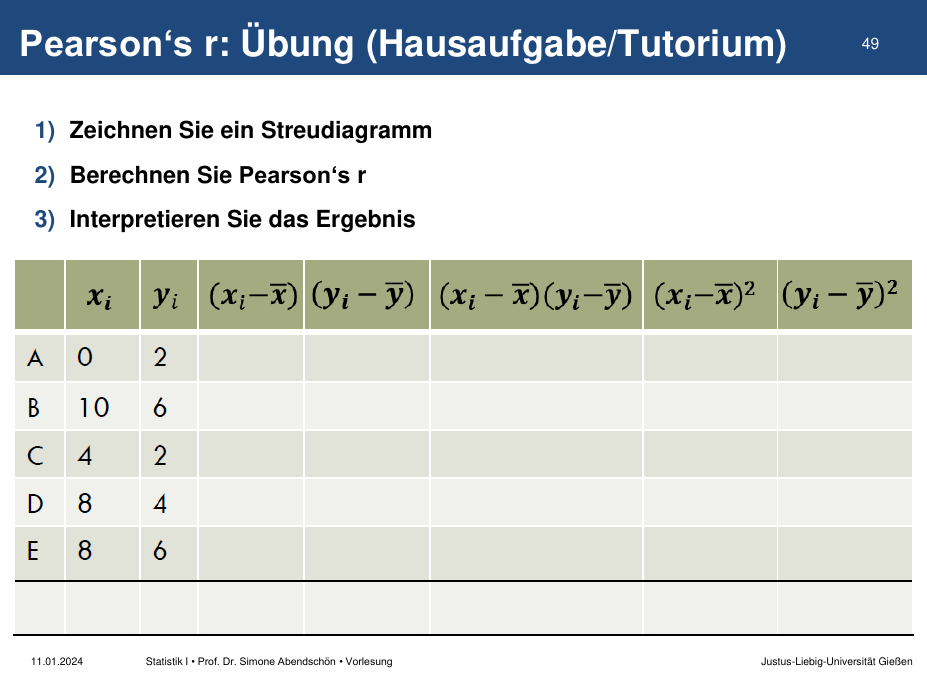
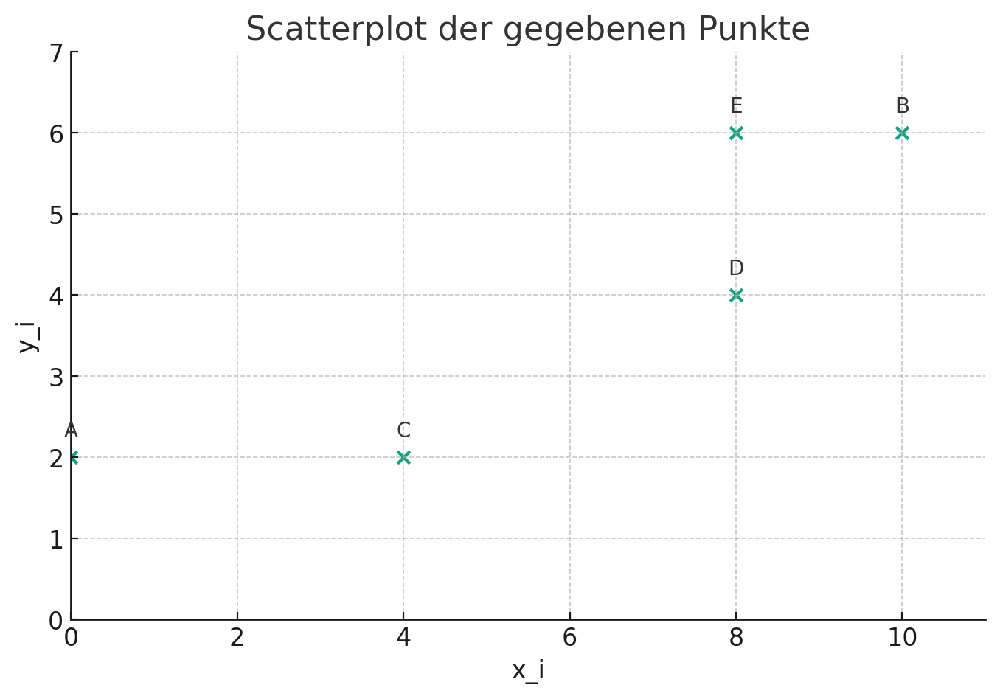
| \(x_i\) | \(y_i\) | \(\bar{x}\) | \(\bar{y}\) | \((x_i - \bar{x})\) | \((y_i - \bar{y})\) | \((x_i - \bar{x}) \cdot (y_i - \bar{y})\) | \((x_i - \bar{x})^2\) | \((y_i - \bar{y})^2\) | |
|---|---|---|---|---|---|---|---|---|---|
| A | 0 | 2 | 6 | 4 | -6 | -2 | 12 | 36 | 4 |
| B | 10 | 6 | 6 | 4 | 4 | 2 | 8 | 16 | 4 |
| C | 4 | 2 | 6 | 4 | -2 | -2 | 4 | 4 | 4 |
| D | 8 | 4 | 6 | 4 | 2 | 0 | 0 | 4 | 0 |
| E | 8 | 6 | 6 | 4 | 2 | 2 | 4 | 4 | 4 |
| Sum | 28 | 64 | 16 |
\[ r = \frac{\sum (x_i - \bar{x})(y_i - \bar{y})}{\sqrt{\sum (x_i - \bar{x})^2 \sum (y_i - \bar{y})^2}} \]
\[ = \frac{28}{\sqrt{64 \cdot 16}} = \frac{28}{\sqrt{1024}} = 0,875 \]
Die beiden Variablen hängen stark positiv zusammen.
VL 10
Gegeben sei für eine Population von \(\text{N} = 50.000\) Personen deren Körpergröße (in cm) mit \(\mathcal{N}(175, 5)\)
Wie groß sind 95% aller Personen?
\[ \text{x} = \mu \pm z \cdot \sigma^2 \]
Wir wollen die Mittleren 95% wissen und möchten daher restlichen 5% auf die beiden Enden der Glockenkurve aufteilen: \[ \frac{0,05}{2}=0,025 \] Auf beiden Seiten schneiden wir also \(2,5\%\) der Fläche ab.
Um die Grenzen zu finden, die die mittleren 95% von den Randbereichen trennen berechnen wir: \[ 1-0,025=0,975 \]
0,975 in Z-Tabelle suchen \(\Rightarrow\) Z-Wert: 1,96
- \(175 – 1,96\cdot 5 = 165,2\)
- \(175 + 1,96\cdot 5 = 184,8\)
95% aller Personen haben eine Körpergröße zwischen 165,2cm und 184,8cm
In der Z-Tabelle den Z-Wert -1 suchen ergibt: 0.1587
Vorgehen: Die Fläche links von \(z=2\) minus die Fläche links von \(z=-2\)
In der Z-Tabelle nachschauen: - \(z_{-2} = 0.0228\) - \(z_2 = 0.9772\) \[ 0.9772 - 0.0228 = 0,9544 \] Der Flächenanteil beträgt \(0,9544\) oder auch \(95,44\%\).
Tipps und Extras
Khan Academy (z.B. Wann und warum wir bei der Varianz durch (n-1) teilen): KhanAcademy Videos
Ben Lambert (z.B. Kovarianz und Korrelation und Freiheitsgrade): Ben Lambert Videos
ziemlich mathematisch aber gut animiert: 3blue1brown (z.B. dieses Video zum zentralen Grenzwertsatz): 3blue1brown Videos
Statistics by Jim: Statistics by Jim
Statistik Guru: Statistik Guru
Philipp Kleers Web-Based-Training zur Vorlesung ist in Stud.IP und ILIAS verlinks